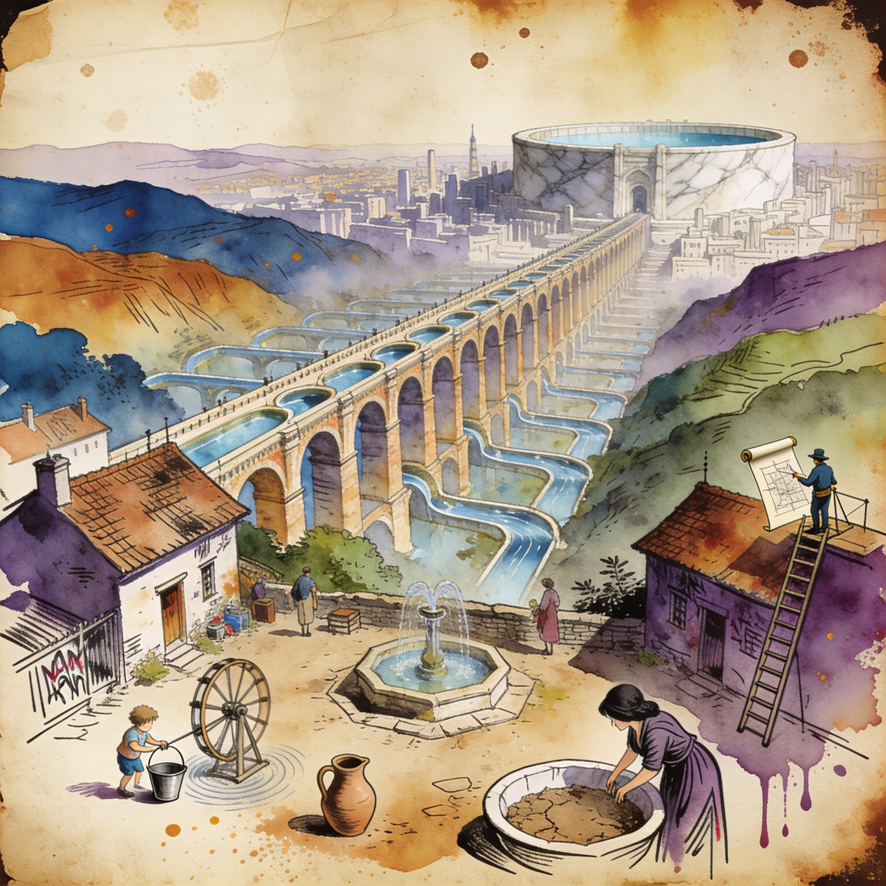

Memory squeeze
AI demand pushes NOR flash and SLC NAND into 'severe undersupply'
The memory crisis is spreading beyond DRAM and HBM: Tom's Hardware's investigation finds fabs routing capacity from low-margin NOR flash and SLC NAND toward AI products, with no capacity expansion planned in the sub-$1B SLC market because AI/HBM demand disincentivises the investment. Analysts warn of severe undersupply for legacy memory used in everyday electronics, and one expert predicts prices stay elevated for years as long as hyperscaler spending continues — an indirect tax on the boards and storage of every local AI rig.